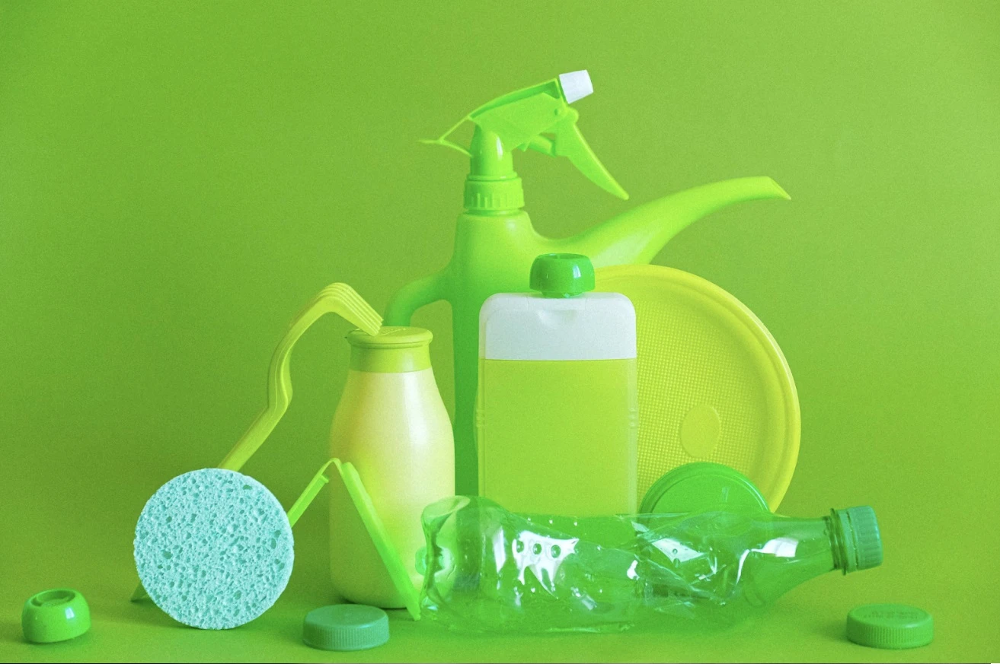

Daur Ulang Sampah Plastik dan Daur Ulang Botol Plastik

Cara Daur Ulang Sampah Plastik dan Daur Ulang Botol Plastik
Sampah plastik merupakan salah satu sampah terbesar yang ada di rumah. Jenis sampah ini sangat sulit untuk terurai secara alami sehingga wajib untuk kita daur ulang.
Proses untuk daur ulang sampah plastik cukup mudah dan bisa Anda lakukan di rumah. Jika Anda tertarik, maka Anda bisa melakukan hal berikut ini:
- Kumpulkan dan sortir sampah plastik: Langkah pertama yang perlu Anda lakukan adalah dengan mengumpulkan dan menyortir sampah plastik. Pisahkan sampah plastik ini berdasarkan jenis-jenisnya seperti botol plastik, kantong plastik, dan jenis lain.
- Cuci sampah plastik: Langkah berikutnya yang perlu Anda lakukan adalah dengan mencuci sampah plastik yang sudah dikumpulkan. Tujuannya adalah untuk menghilangkan kotoran dan bahan kimia seperti lem yang ada di sampah tersebut.
- Kreasikan sesuai keinginan Anda: Setelah semuanya bersih, Anda bisa membuat berbagai barang sesuai keinginan Anda. Potong atau gabungkan dengan sampah plastik lain agar bisa menjadi barang yang bisa dipakai kembali.
Salah satu contoh sampah plastik yang paling banyak di setiap rumah dan mudah untuk dikreasikan adalah botol plastik. Jika Anda memiliki banyak botol plastik di rumah, maka saran kami adalah untuk tidak membuangnya. Ada banyak barang menarik yang bisa Anda buat dari proses daur ulang botol plastik, seperti:
- Daur ulang menjadi pot lucu: Botol plastik bisa Anda daur ulang untuk menjadi pot bunga yang lucu. Anda cukup memotong setengah bagian botol, isi dengan tanah, dan tanam bunga Anda.
- Membuat celengan: Celengan bisa dengan mudah kita buat dengan menggunakan botol plastik. Buat sedikit lubang yang ada di botol sebagai tempat untuk memasukkan uang Anda.
- Tempat menyimpan makanan: Botol plastik juga bisa Anda manfaatkan sebagai tempat untuk menyimpan makanan dan cemilan kecil. Jangan lupa untuk cuci bersih terlebih dahulu botol plastik ini sebelum digunakan.
Daur Ulang Sampah: Pengertian dan Manfaatnya
Cara mendaur ulang kertas bekas di rumah
Jika kita tidak bisa terlalu bergantung pada pengumpulan sampah kolektif, bagaimana cara mendaur ulang kertas sendiri? Ikuti cara-caranya di bawah ini.
- Gunakan sebagai kompos. Kertas bekas berperan penting dalam proses pembuatan kompos. Jika Anda tidak memiliki tempat pengomposan sendiri, cukup sobek-sobek kertas bekas menjadi potongan-potongan kecil dan sebarkan di sekeliling tanaman Anda. Cara ini membantu menjaga kelembapan tanah Anda dan menambah nutrisi ke dalam tanah.
- Gunakan sebagai bahan pembungkus. Cara yang ini sudah umum digunakan sebagai cara mendaur ulang koran. Kertas bekas dan koran bisa digunakan untuk menyumpal kardus atau barang pecah belah ketika Anda pindahan, membungkus barang yang disimpan di gudang, atau membungkus kiriman paket.
- Ubah menjadi kertas baru. Cara yang ini sudah dikenal jauh lebih lama di Indonesia sebagai cara membuat kertas daur ulang. Cara ini adalah salah satu kegiatan prakarya populer bagi anak-anak. Kegiatan ini juga mendidik karena meniru proses daur ulang kertas di pabrik daur ulang.
Cara mendaur ulang kertas bekas di rumah
Cara mendaur ulang sisa makanan
Limbah sayur dan buah adalah jenis sampah organik yang dapat membusuk dan menghasilkan gas metana jika terkubur dalam tumpukan sampah konvensional. Dengan mengelolanya melalui kompos, kita dapat mengurangi emisi gas rumah kaca.
Membuat kompos dari sampah sayur dan buah memiliki manfaat ganda. Pertama, mengurangi volume sampah yang masuk ke tempat pembuangan akhir. Kedua, menghasilkan pupuk alami yang kaya akan nutrisi bagi tanaman.
Alat dan bahan yang dibutuhkan dalam pembuatan kompos yaitu wadah berukuran besar dengan penutup, sarung tangan, sampah organik, tanah, air, arang sekam, kapur, dan cairan pupuk EM4. Berikut cara pembuatan kompos dari sisa makanan :
- Masukkan tanah secukupnya ke dalam wadah yang berisi sampah organik
- Siram permukaan tanah dengan air secukupnya
- Masukkan sampah organik yang dicampur arang sekam dan kapur
- Siram permukaan tanah dengan air yang telah dicampur pupuk organik EM4
- Masukkan tanah kembali ke dalam wadah
- Tutup bagian atas wadah dengan aluminium foil
- Aduk pupuk secara rutin seminggu sekali
- Simpan di tempat yang terhindar dari paparan sinar matahari dan air hujan
- Pupuk siap dipakai setelah 6 minggu.
Membuat Kompos dari Sampah Sayur dan Buah: Mengurangi Limbah dan Membantu Lingkungan